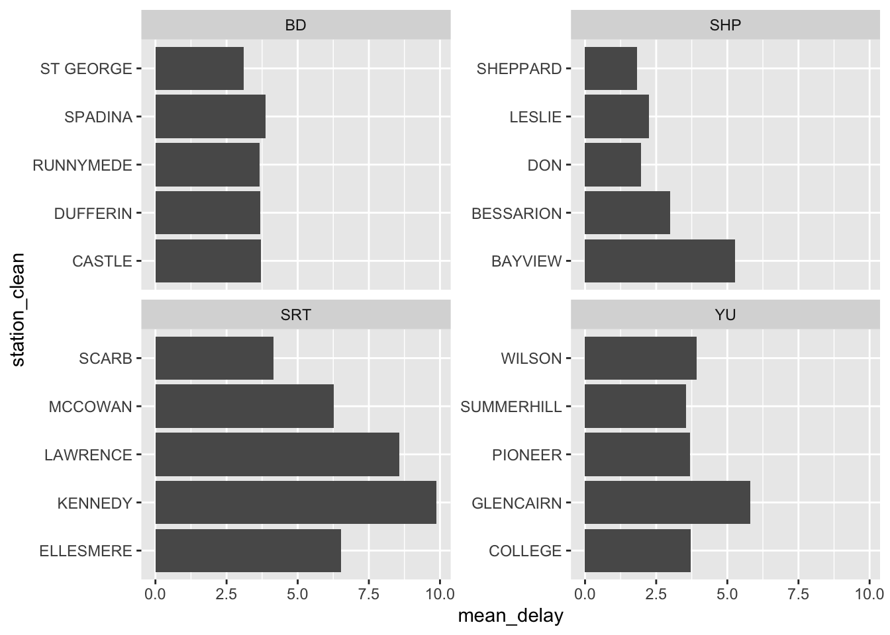

Chapter 13 Exploratory data analysis
This chapter was written with Monica Alexander.
Required reading
- Wickham, Hadley, and Garrett Grolemund, 2017, R for Data Science, Chapters 3 and 7, freely available here: https://r4ds.had.co.nz/.
Recommended reading
- Hall, Megan, 2019, ‘Exploratory Data Analysis Using Tidyverse,’ freely available at: https://hockey-graphs.com/2019/10/08/exploratory-data-analysis-using-tidyverse/.
- Jordan, Michael I, 2019, ‘AI - The revolution hasn’t started yet,’ freely available at: https://hdsr.mitpress.mit.edu/pub/wot7mkc1.
- Silge, Julia, 2018, ‘Understanding PCA using Stack Overflow data,’ freely available at: https://juliasilge.com/blog/stack-overflow-pca/.
- Soetewey, Antoine, 2020, ‘Descriptive statistics in R,’ freely available at: https://www.statsandr.com/blog/descriptive-statistics-in-r/.
- Stodulka, Jiri, 2019, ‘Toronto Crime and Folium,’ freely available at: https://www.jiristodulka.com/post/toronto-crime/.
- Wong, Julia Carrie, 2020, ‘One year inside Trump’s monumental Facebook campaign,’ The Guardian, 29 January, freely available at: https://www.theguardian.com/us-news/2020/jan/28/donald-trump-facebook-ad-campaign-2020-election.
Key concepts/skills/etc
- Quickly coming to terms with a new dataset
Key libraries/functions/etc
tidyverseggplot2
Quiz
- In your own words what is exploratory data analysis?
- If you have a dataset called ‘my_data,’ which has two columns: ‘first_col’ and ‘second_col,’ then could you please write some rough R code that would generate a graph (the type of graph doesn’t matter).
- Consider a dataset that has 500 rows and 3 columns, so there are 1,500 cells. If 100 of the cells are missing data for at least one of the columns, then would you remove the whole row your dataset or try to run your analysis on the data as is, or some other procedure? What if your dataset had 10,000 rows instead, but the same number of missing cells?
- Please note three ways of identifying unusual values.
- What is the difference between a categorical and continuous variable?
13.1 Introduction
Exploratory data analysis is never finished, you just die.
This chapter is about exploratory data analysis (EDA) and data visualization steps in R. The aim is to get you used to working with real data (that has issues) to understand the main characteristics and potential issues.
We will be using the opendatatoronto R package, which interfaces with the City of Toronto Open Data Portal.
13.2 A note on packages
If you are running this Rmd on your local machine, you may need to install various packages used (using the install.packages function).
Load in all the packages we need:
library(opendatatoronto)
library(tidyverse)
library(stringr)
library(visdat)
library(janitor)
library(lubridate)
library(ggrepel)13.3 TTC subway delays
This package provides an interface to all data available on the Open Data Portal provided by the City of Toronto.
Use the list_packages function to look at what’s available
all_data <- list_packages(limit = 500)
all_data## # A tibble: 405 x 11
## title id topics civic_issues publisher excerpt dataset_category
## <chr> <chr> <chr> <chr> <chr> <chr> <chr>
## 1 Cata… 473d… City … <NA> Informat… "Histo… Table
## 2 Lice… 059d… Commu… <NA> Children… "Licen… Map
## 3 Earl… 2619… Commu… Poverty red… Children… "Early… Map
## 4 Shor… fc41… Permi… Affordable … Municipa… "This … Table
## 5 Poll… 7bce… City … <NA> City Cle… "Polls… Table
## 6 Dail… 8a6e… City … Affordable … Shelter,… "Daily… Table
## 7 Rain… f293… Locat… Climate cha… Toronto … "This … Document
## 8 Stre… 99b1… City … <NA> Transpor… "Infor… Map
## 9 Auto… a154… Trans… Mobility Transpor… "This … Map
## 10 Body… c405… City … <NA> Toronto … "This … Table
## # … with 395 more rows, and 4 more variables: num_resources <int>,
## # formats <chr>, refresh_rate <chr>, last_refreshed <date>Let’s download the data on TTC subway delays in 2019. There are multiple files for 2019 so we need to get them all and make them into one big dataframe.
res <- list_package_resources("996cfe8d-fb35-40ce-b569-698d51fc683b")
res <- res %>% mutate(year = str_extract(name, "201.?"))
delay_2019_ids <- res %>% filter(year==2019) %>% select(id) %>% pull()
delay_2019 <- c()
for(i in 1:length(delay_2019_ids)) {
delay_2019 <- bind_rows(delay_2019, get_resource(delay_2019_ids[i]))
}
# make the column names nicer to work with
delay_2019 <- clean_names(delay_2019)Let’s also download the delay code and readme, as reference.
delay_codes <- get_resource("fece136b-224a-412a-b191-8d31eb00491e")
delay_data_codebook <- get_resource("54247e39-5a7d-40db-a137-82b2a9ab0708")This dataset has a bunch of interesting variables. You can refer to the readme for descriptions. Our outcome of interest is min_delay, which give the delay in mins.
head(delay_2019)## # A tibble: 6 x 10
## date time day station code min_delay min_gap bound line
## <dttm> <chr> <chr> <chr> <chr> <dbl> <dbl> <chr> <chr>
## 1 2019-01-01 00:00:00 01:08 Tues… YORK M… PUSI 0 0 S YU
## 2 2019-01-01 00:00:00 02:14 Tues… ST AND… PUMST 0 0 <NA> YU
## 3 2019-01-01 00:00:00 02:16 Tues… JANE S… TUSC 0 0 W BD
## 4 2019-01-01 00:00:00 02:27 Tues… BLOOR … SUO 0 0 N YU
## 5 2019-01-01 00:00:00 03:03 Tues… DUPONT… MUATC 11 16 N YU
## 6 2019-01-01 00:00:00 03:08 Tues… EGLINT… EUATC 11 16 S YU
## # … with 1 more variable: vehicle <dbl>13.4 EDA and data viz
The following section highlights some tools that might be useful for you when you are getting used to a new dataset. There’s no one way of exploration, but it’s important to always keep in mind:
- what should your variables look like (type, values, distribution, etc)
- what would be surprising (outliers etc)
- what is your end goal (here, it might be understanding factors associated with delays, e.g. stations, time of year, time of day, etc)
In any data analysis project, if it turns out you have data issues, surprising values, missing data etc, it’s important you document anything you found and the subsequent steps or assumptions you made before moving onto your data analysis / modeling.
As always:
- Start with an end in mind.
- Be as lazy as possible.
13.5 Data checks
13.5.1 Sanity Checks
We need to check variables should be what they say they are. If they aren’t, the natural next question is to what to do with issues (recode? remove?)
E.g. check days of week
unique(delay_2019$day)## [1] "Tuesday" "Wednesday" "Thursday" "Friday" "Saturday" "Sunday"
## [7] "Monday"Check lines: oh no. some issues here. Some have obvious recodes, others, not so much.
unique(delay_2019$line)## [1] "YU" "BD" "YU/BD"
## [4] "SHP" "SRT" NA
## [7] "YUS" "B/D" "BD LINE"
## [10] "999" "YU/ BD" "YU & BD"
## [13] "BD/YU" "YU\\BD" "46 MARTIN GROVE"
## [16] "RT" "BLOOR-DANFORTH" "YU / BD"
## [19] "134 PROGRESS" "YU - BD" "985 SHEPPARD EAST EXPR"
## [22] "22 COXWELL" "100 FLEMINGDON PARK" "YU LINE"What are the different values of bound for each line?
For simplicity, just keep the correct line labels.
# delay_2019 %>%
# filter(line %in% c("BD", "YU", "SHP", "SRT")) %>%
# mutate(bound = as.factor(bound)) %>%
# group_by(line) %>%
# skim(bound)13.5.2 Missing values
Look to see how many NAs by variable
delay_2019 %>%
summarise_all(.funs = funs(sum(is.na(.))/nrow(delay_2019)*100))## # A tibble: 1 x 10
## date time day station code min_delay min_gap bound line vehicle
## <dbl> <dbl> <dbl> <dbl> <dbl> <dbl> <dbl> <dbl> <dbl> <dbl>
## 1 0 0 0 0 0 0 0 22.8 0.260 0The visdat package is also useful here, particularly to see how missing values are distributed.
vis_dat(delay_2019)
vis_miss(delay_2019)
13.5.3 Duplicates?
The get_dupes function from the janitor package is useful for this.
get_dupes(delay_2019)## # A tibble: 158 x 11
## date time day station code min_delay min_gap bound line
## <dttm> <chr> <chr> <chr> <chr> <dbl> <dbl> <chr> <chr>
## 1 2019-01-01 00:00:00 08:18 Tues… DONLAN… MUESA 5 10 W BD
## 2 2019-01-01 00:00:00 08:18 Tues… DONLAN… MUESA 5 10 W BD
## 3 2019-02-01 00:00:00 05:51 Frid… SCARB … MRTO 10 15 S SRT
## 4 2019-02-01 00:00:00 05:51 Frid… SCARB … MRTO 10 15 S SRT
## 5 2019-02-01 00:00:00 06:45 Frid… MIDLAN… MRWEA 3 8 S SRT
## 6 2019-02-01 00:00:00 06:45 Frid… MIDLAN… MRWEA 3 8 S SRT
## 7 2019-02-01 00:00:00 06:55 Frid… LAWREN… ERDO 0 0 S SRT
## 8 2019-02-01 00:00:00 06:55 Frid… LAWREN… ERDO 0 0 S SRT
## 9 2019-02-01 00:00:00 07:16 Frid… MCCOWA… MRWEA 5 10 N SRT
## 10 2019-02-01 00:00:00 07:16 Frid… MCCOWA… MRWEA 5 10 N SRT
## # … with 148 more rows, and 2 more variables: vehicle <dbl>, dupe_count <int>There are quite a few duplicates. Remove for now:
delay_2019 <- delay_2019 %>% distinct()13.5.4 Visualizing distributions
Histograms, barplots, and density plots are your friends here.
Let’s look at the outcome of interest: min_delay. First of all just a histogram of all the data:
## Removing the observations that have non-standardized lines
delay_2019 <- delay_2019 %>% filter(line %in% c("BD", "YU", "SHP", "SRT"))
ggplot(data = delay_2019) +
geom_histogram(aes(x = min_delay))
To improve readability, could plot on logged scale:
ggplot(data = delay_2019) +
geom_histogram(aes(x = min_delay)) + scale_x_log10()
Our initial EDA hinted at an outlying delay time, let’s take a look at the largest delays below. Join the delay_codes dataset to see what the delay is. (Have to do some mangling as SRT has different codes).
delay_2019 <- delay_2019 %>%
left_join(delay_codes %>% rename(code = `SUB RMENU CODE`, code_desc = `CODE DESCRIPTION...3`) %>% select(code, code_desc))
delay_2019 <- delay_2019 %>%
mutate(code_srt = ifelse(line=="SRT", code, "NA")) %>%
left_join(delay_codes %>% rename(code_srt = `SRT RMENU CODE`, code_desc_srt = `CODE DESCRIPTION...7`) %>% select(code_srt, code_desc_srt)) %>%
mutate(code = ifelse(code_srt=="NA", code, code_srt),
code_desc = ifelse(is.na(code_desc_srt), code_desc, code_desc_srt)) %>%
select(-code_srt, -code_desc_srt)The 455 min delay due to ‘Rail Related Problem’ is an outlier.
delay_2019 %>%
left_join(delay_codes %>% rename(code = `SUB RMENU CODE`, code_desc = `CODE DESCRIPTION...3`) %>% select(code, code_desc)) %>%
arrange(-min_delay) %>%
select(date, time, station, line, min_delay, code, code_desc)## # A tibble: 18,697 x 7
## date time station line min_delay code code_desc
## <dttm> <chr> <chr> <chr> <dbl> <chr> <chr>
## 1 2019-06-25 00:00:00 18:48 WILSON TO … YU 455 PUTR Rail Related Pro…
## 2 2019-02-12 00:00:00 20:28 LAWRENCE E… SRT 284 MRWEA Weather Reports …
## 3 2019-06-05 00:00:00 12:42 UNION TO S… YU 250 MUPLA Fire/Smoke Plan A
## 4 2019-10-22 00:00:00 14:22 LAWRENCE S… YU 228 PUTS Structure Relate…
## 5 2019-09-26 00:00:00 11:38 YORK MILLS… YU 193 MUPR1 Priority One - T…
## 6 2019-06-08 00:00:00 08:51 SPADINA BD… BD 180 MUPLB Fire/Smoke Plan …
## 7 2019-12-02 00:00:00 06:59 DUNDAS WES… BD 176 MUPLB Fire/Smoke Plan …
## 8 2019-01-29 00:00:00 05:46 VICTORIA P… BD 174 MUWEA Weather Reports …
## 9 2019-02-22 00:00:00 17:32 ELLESMERE … SRT 168 PRW Rail Defect/Fast…
## 10 2019-02-10 00:00:00 07:53 BAYVIEW ST… SHP 165 PUSI Signals or Relat…
## # … with 18,687 more rows13.5.4.1 Grouping and small multiples
A quick and powerful visualization technique is to group the data by a variable of interest, e.g. line
ggplot(data = delay_2019) +
geom_histogram(aes(x = min_delay, y = ..density.., fill = line), position = 'dodge', bins = 10) + scale_x_log10()
I switched to density above to look at the the distributions more comparably, but we should also be aware of differences in frequency, in particular, SHP and SRT have much smaller counts:
ggplot(data = delay_2019) +
geom_histogram(aes(x = min_delay, fill = line), position = 'dodge', bins = 10) + scale_x_log10()
If you want to group by more than one variable, facets are good:
ggplot(data = delay_2019) +
geom_density(aes(x = min_delay, color = day), bw = .08) +
scale_x_log10() + facet_grid(~line)
Side note: the station names are a mess. Try and clean up the station names a bit by taking just the first word (or, the first two if it starts with “ST”):
delay_2019 <- delay_2019 %>%
mutate(station_clean = ifelse(str_starts(station, "ST"), word(station, 1,2), word(station, 1)))Plot top five stations by mean delay:
delay_2019 %>%
group_by(line, station_clean) %>%
summarise(mean_delay = mean(min_delay), n_obs = n()) %>%
filter(n_obs>1) %>%
arrange(line, -mean_delay) %>%
slice(1:5) %>%
ggplot(aes(station_clean, mean_delay)) + geom_col() + coord_flip() + facet_wrap(~line, scales = "free_y")
13.5.5 Visualizing time series
Daily plot is messy (you can check for yourself). Let’s look by week to see if there’s any seasonality. The lubridate package has lots of helpful functions that deal with date variables. First, mean delay (of those that were delayed more than 0 mins):
delay_2019 %>%
filter(min_delay>0) %>%
mutate(week = week(date)) %>%
group_by(week, line) %>%
summarise(mean_delay = mean(min_delay)) %>%
ggplot(aes(week, mean_delay, color = line)) + geom_point() + geom_smooth() + facet_grid(~line)
What about proportion of delays that were greater than 10 mins?
delay_2019 %>%
mutate(week = week(date)) %>%
group_by(week, line) %>%
summarise(prop_delay = sum(min_delay>10)/n()) %>%
ggplot(aes(week, prop_delay, color = line)) + geom_point() + geom_smooth() + facet_grid(~line)
13.5.6 Visualizing relationships
Note that scatter plots are a good precursor to modeling, to visualize relationships between continuous variables. Nothing obvious to plot here, but easy to do with geom_point.
Look at top five reasons for delay by station. Do they differ? Think about how this could be modeled.
delay_2019 %>%
group_by(line, code_desc) %>%
summarise(mean_delay = mean(min_delay)) %>%
arrange(-mean_delay) %>%
slice(1:5) %>%
ggplot(aes(x = code_desc,
y = mean_delay)) +
geom_col() +
facet_wrap(vars(line),
scales = "free_y",
nrow = 4) +
coord_flip()
13.5.7 PCA
Principal components analysis is a really powerful exploratory tool. It allows you to pick up potential clusters and/or outliers that can help to inform model building.
Let’s do a quick (and imperfect) example looking at types of delays by station.
The delay categories are a bit of a mess, and there’s hundreds of them. As a simple start, let’s just take the first word:
delay_2019 <- delay_2019 %>%
mutate(code_red = case_when(
str_starts(code_desc, "No") ~ word(code_desc, 1, 2),
str_starts(code_desc, "Operator") ~ word(code_desc, 1,2),
TRUE ~ word(code_desc,1))
)Let’s also just restrict the analysis to causes that happen at least 50 times over 2019. To do the PCA, the dataframe also needs to be switched to wide format:
dwide <- delay_2019 %>%
group_by(line, station_clean) %>%
mutate(n_obs = n()) %>%
filter(n_obs>1) %>%
group_by(code_red) %>%
mutate(tot_delay = n()) %>%
arrange(tot_delay) %>%
filter(tot_delay>50) %>%
group_by(line, station_clean, code_red) %>%
summarise(n_delay = n()) %>%
pivot_wider(names_from = code_red, values_from = n_delay) %>%
mutate_all(.funs = funs(ifelse(is.na(.), 0, .)))Do the PCA:
delay_pca <- prcomp(dwide[,3:ncol(dwide)])
df_out <- as_tibble(delay_pca$x)
df_out <- bind_cols(dwide %>% select(line, station_clean), df_out)
head(df_out)## # A tibble: 6 x 40
## # Groups: line, station_clean [6]
## line station_clean PC1 PC2 PC3 PC4 PC5 PC6 PC7 PC8
## <chr> <chr> <dbl> <dbl> <dbl> <dbl> <dbl> <dbl> <dbl> <dbl>
## 1 BD BATHURST 6.50 26.9 -2.71 -10.8 -8.40 -11.7 -3.33 -4.11
## 2 BD BAY 24.8 7.63 -2.19 -7.05 0.714 3.90 -2.29 -4.14
## 3 BD BLOOR -62.4 -112. 57.3 -23.4 -5.09 -14.1 13.7 5.06
## 4 BD BROADVIEW -6.60 28.1 -1.06 -14.0 -6.49 -8.29 -6.29 -1.40
## 5 BD CASTLE 23.8 11.8 -1.31 -7.93 -3.62 -3.37 -2.08 -3.48
## 6 BD CHESTER 24.6 -1.87 -18.6 2.75 1.85 0.0736 3.79 -1.27
## # … with 30 more variables: PC9 <dbl>, PC10 <dbl>, PC11 <dbl>, PC12 <dbl>,
## # PC13 <dbl>, PC14 <dbl>, PC15 <dbl>, PC16 <dbl>, PC17 <dbl>, PC18 <dbl>,
## # PC19 <dbl>, PC20 <dbl>, PC21 <dbl>, PC22 <dbl>, PC23 <dbl>, PC24 <dbl>,
## # PC25 <dbl>, PC26 <dbl>, PC27 <dbl>, PC28 <dbl>, PC29 <dbl>, PC30 <dbl>,
## # PC31 <dbl>, PC32 <dbl>, PC33 <dbl>, PC34 <dbl>, PC35 <dbl>, PC36 <dbl>,
## # PC37 <dbl>, PC38 <dbl>Plot the first two PCs, and label some outlying stations:
ggplot(df_out,aes(x=PC1,y=PC2,color=line )) + geom_point() + geom_text_repel(data = df_out %>% filter(PC2>100|PC1<100*-1), aes(label = station_clean))
Plot the factor loadings. Some evidence of public v operator?
df_out_r <- as_tibble(delay_pca$rotation)
df_out_r$feature <- colnames(dwide[,3:ncol(dwide)])
df_out_r## # A tibble: 38 x 39
## PC1 PC2 PC3 PC4 PC5 PC6 PC7 PC8
## <dbl> <dbl> <dbl> <dbl> <dbl> <dbl> <dbl> <dbl>
## 1 -0.0412 0.0638 1.33e-2 -4.67e-2 0.0246 0.0184 -0.00363 0.0198
## 2 -0.0332 -0.00469 -4.14e-2 -7.51e-3 0.0201 -0.0122 -0.0914 -0.0903
## 3 -0.135 0.207 2.37e-2 -1.44e-1 0.135 -0.0381 -0.00931 -0.320
## 4 -0.0652 0.0475 -4.43e-2 -2.51e-2 -0.00139 -0.0748 -0.144 -0.428
## 5 -0.00443 0.00878 -4.99e-5 -8.30e-4 0.00967 0.00954 -0.0160 -0.0144
## 6 -0.0268 -0.00722 -4.39e-3 5.34e-4 -0.0151 -0.0125 -0.00381 -0.0423
## 7 -0.0813 0.0960 -4.62e-2 4.79e-2 -0.0978 -0.0365 -0.0766 0.278
## 8 -0.0117 0.0135 5.48e-3 -2.94e-2 0.0125 0.0377 -0.0790 -0.0321
## 9 -0.516 0.655 -1.77e-2 -1.62e-1 -0.221 -0.287 -0.184 0.0465
## 10 -0.151 0.0826 5.48e-2 3.52e-1 -0.397 0.281 0.110 0.477
## # … with 28 more rows, and 31 more variables: PC9 <dbl>, PC10 <dbl>,
## # PC11 <dbl>, PC12 <dbl>, PC13 <dbl>, PC14 <dbl>, PC15 <dbl>, PC16 <dbl>,
## # PC17 <dbl>, PC18 <dbl>, PC19 <dbl>, PC20 <dbl>, PC21 <dbl>, PC22 <dbl>,
## # PC23 <dbl>, PC24 <dbl>, PC25 <dbl>, PC26 <dbl>, PC27 <dbl>, PC28 <dbl>,
## # PC29 <dbl>, PC30 <dbl>, PC31 <dbl>, PC32 <dbl>, PC33 <dbl>, PC34 <dbl>,
## # PC35 <dbl>, PC36 <dbl>, PC37 <dbl>, PC38 <dbl>, feature <chr>ggplot(df_out_r,aes(x=PC1,y=PC2,label=feature )) + geom_text_repel()
13.6 Exercises
- Using the
opendatatorontopackage, download the data on mayoral campaign contributions for 2014. (note: the 2014 file you will get fromget_resource, so just keep the sheet that relates to the Mayor election). - Clean up the data format (fixing the parsing issue and standardizing the column names using
janitor) - Summarize the variables in the dataset. Are there missing values, and if so, should we be worried about them? Is every variable in the format it should be? If not, create new variable(s) that are in the right format.
- Visually explore the distribution of values of the contributions. What contributions are notable outliers? Do they share a similar characteristic(s)? It may be useful to plot the distribution of contributions without these outliers to get a better sense of the majority of the data.
- List the top five candidates in each of these categories:
- total contributions
- mean contribution
- number of contributions
- Repeat 5 but without contributions from the candidates themselves.
- How many contributors gave money to more than one candidate?
13.7 Case study - Opinions about a casino in Toronto
This was written by Michael Chong.
13.7.1 Data preparation
13.7.1.1 Getting data from opendatatoronto
Here we use the opendatatoronto package again. See the previous example RMarkdown file for a deeper explanation of how the code below works.
The dataset I’m extracting below are the results from a survey in 2012 regarding the establishment of a casino in Toronto. More info available by following this link. In this analysis, we’ll be hoping to address the question, which demographic (age/gender) groups are more likely to be supportive of a new casino in Toronto?
# Get the data
casino_resource <- search_packages("casino survey")%>%
list_package_resources() %>%
filter(name == "toronto-casino-survey-results") %>%
get_resource()13.7.1.2 Getting the right kind of object
The object casino_resource isn’t quite useable yet, because it’s (inconveniently) stored as a list of 2 data frames:
# Check what kind of object the casino_resource object is
class(casino_resource)## [1] "list"If we just return the object, we can see that the 2nd list item is empty, and we just want to keep the first one:
casino_resource## $tblSurvey
## # A tibble: 17,766 x 94
## SurveyID Q1_A Q1_B1 Q1_B2 Q1_B3 Q2_A Q2_B Q3_A Q3_B Q3_C Q3_D Q3_E
## <dbl> <chr> <chr> <chr> <chr> <chr> <chr> <chr> <chr> <chr> <chr> <chr>
## 1 1 Stro… Do n… Do n… Do n… Does… "As … Not … Very… Not … Not … Not …
## 2 2 Stro… Econ… Jobs Arts… Fits… "Cos… Very… Very… Very… Very… Very…
## 3 3 Stro… Ther… If t… <NA> Fits… "Big… Very… Very… Very… Very… Very…
## 4 4 Some… beli… mone… evid… Does… "My … Very… Very… Some… Some… Very…
## 5 5 Neut… Like… Conc… <NA> Neut… "Aga… Very… Very… Very… Not … Very…
## 6 6 Stro… have… <NA> <NA> Does… "Tor… Not … Not … Not … Not … Not …
## 7 7 Stro… The … Peop… We s… Does… "#3 … Not … Not … Not … Not … Not …
## 8 8 Stro… It w… Mora… <NA> Does… "Cas… Very… Very… Very… Very… Very…
## 9 9 Stro… It's… traf… heal… Does… "No … Not … Very… Not … Not … Some…
## 10 10 Stro… Toro… Avoi… Prov… Fits… "Tor… Very… Very… Very… Not … Very…
## # … with 17,756 more rows, and 82 more variables: Q3_F <chr>, Q3_G <chr>,
## # Q3_H <chr>, Q3_I <chr>, Q3_J <chr>, Q3_K <chr>, Q3_L <chr>, Q3_M <chr>,
## # Q3_N <chr>, Q3_O <chr>, Q3_P <chr>, Q3_Q <chr>, Q3_Q_Other <chr>,
## # Q3_Comments <chr>, Q4_A <chr>, Q5 <chr>, Q6 <chr>, Q6_Comments <chr>,
## # Q7_A_StandAlone <chr>, Q7_A_Integrated <chr>, Q7_A1 <chr>, Q7_A2 <chr>,
## # Q7_A3 <chr>, Q7_A_A <chr>, Q7_A_B <chr>, Q7_A_C <chr>, Q7_A_D <chr>,
## # Q7_A_E <chr>, Q7_A_F <chr>, Q7_A_G <chr>, Q7_A_H <chr>, Q7_A_I <chr>,
## # Q7_A_J <chr>, Q7_A_J_Other <chr>, Q7_B_StandAlone <chr>,
## # Q7_B_Integrated <chr>, Q7_B1 <chr>, Q7_B2 <chr>, Q7_B3 <chr>, Q7_B_A <chr>,
## # Q7_B_B <chr>, Q7_B_C <chr>, Q7_B_D <chr>, Q7_B_E <chr>, Q7_B_F <chr>,
## # Q7_B_G <chr>, Q7_B_H <chr>, Q7_B_I <chr>, Q7_B_J <chr>, Q7_B_J_Other <chr>,
## # Q7_C_StandAlone <chr>, Q7_C_Integrated <chr>, Q7_C1 <chr>, Q7_C2 <chr>,
## # Q7_C3 <chr>, Q7_C_A <chr>, Q7_C_B <chr>, Q7_C_C <chr>, Q7_C_D <chr>,
## # Q7_C_E <chr>, Q7_C_F <chr>, Q7_C_G <chr>, Q7_C_H <chr>, Q7_C_I <chr>,
## # Q7_C_J <chr>, Q7_C_J_Other <chr>, Q8_A1 <chr>, Q8_A2 <chr>, Q8_B1 <chr>,
## # Q8_B2 <chr>, Q8_B3 <chr>, Q9 <chr>, Q9_Considerations <chr>, Q10 <chr>,
## # Q11 <chr>, Age <chr>, Gender <chr>, PostalCode <chr>, GroupName <chr>,
## # DateCreated <dttm>, ...93 <lgl>, ...94 <lgl>
##
## $Sheet1
## # A tibble: 0 x 0So, let’s only keep the first item by indexing the list with double square brackets:
casino_data <- casino_resource[[1]]13.7.1.3 Cleaning up the dataframe
Let’s check out what the first couple rows of the dataframe looks like. By default, head() returns the first 6 rows:
head(casino_data) ## # A tibble: 6 x 94
## SurveyID Q1_A Q1_B1 Q1_B2 Q1_B3 Q2_A Q2_B Q3_A Q3_B Q3_C Q3_D Q3_E
## <dbl> <chr> <chr> <chr> <chr> <chr> <chr> <chr> <chr> <chr> <chr> <chr>
## 1 1 Stro… Do n… Do n… Do n… Does… "As … Not … Very… Not … Not … Not …
## 2 2 Stro… Econ… Jobs Arts… Fits… "Cos… Very… Very… Very… Very… Very…
## 3 3 Stro… Ther… If t… <NA> Fits… "Big… Very… Very… Very… Very… Very…
## 4 4 Some… beli… mone… evid… Does… "My … Very… Very… Some… Some… Very…
## 5 5 Neut… Like… Conc… <NA> Neut… "Aga… Very… Very… Very… Not … Very…
## 6 6 Stro… have… <NA> <NA> Does… "Tor… Not … Not … Not … Not … Not …
## # … with 82 more variables: Q3_F <chr>, Q3_G <chr>, Q3_H <chr>, Q3_I <chr>,
## # Q3_J <chr>, Q3_K <chr>, Q3_L <chr>, Q3_M <chr>, Q3_N <chr>, Q3_O <chr>,
## # Q3_P <chr>, Q3_Q <chr>, Q3_Q_Other <chr>, Q3_Comments <chr>, Q4_A <chr>,
## # Q5 <chr>, Q6 <chr>, Q6_Comments <chr>, Q7_A_StandAlone <chr>,
## # Q7_A_Integrated <chr>, Q7_A1 <chr>, Q7_A2 <chr>, Q7_A3 <chr>, Q7_A_A <chr>,
## # Q7_A_B <chr>, Q7_A_C <chr>, Q7_A_D <chr>, Q7_A_E <chr>, Q7_A_F <chr>,
## # Q7_A_G <chr>, Q7_A_H <chr>, Q7_A_I <chr>, Q7_A_J <chr>, Q7_A_J_Other <chr>,
## # Q7_B_StandAlone <chr>, Q7_B_Integrated <chr>, Q7_B1 <chr>, Q7_B2 <chr>,
## # Q7_B3 <chr>, Q7_B_A <chr>, Q7_B_B <chr>, Q7_B_C <chr>, Q7_B_D <chr>,
## # Q7_B_E <chr>, Q7_B_F <chr>, Q7_B_G <chr>, Q7_B_H <chr>, Q7_B_I <chr>,
## # Q7_B_J <chr>, Q7_B_J_Other <chr>, Q7_C_StandAlone <chr>,
## # Q7_C_Integrated <chr>, Q7_C1 <chr>, Q7_C2 <chr>, Q7_C3 <chr>, Q7_C_A <chr>,
## # Q7_C_B <chr>, Q7_C_C <chr>, Q7_C_D <chr>, Q7_C_E <chr>, Q7_C_F <chr>,
## # Q7_C_G <chr>, Q7_C_H <chr>, Q7_C_I <chr>, Q7_C_J <chr>, Q7_C_J_Other <chr>,
## # Q8_A1 <chr>, Q8_A2 <chr>, Q8_B1 <chr>, Q8_B2 <chr>, Q8_B3 <chr>, Q9 <chr>,
## # Q9_Considerations <chr>, Q10 <chr>, Q11 <chr>, Age <chr>, Gender <chr>,
## # PostalCode <chr>, GroupName <chr>, DateCreated <dttm>, ...93 <lgl>,
## # ...94 <lgl>Unfortunately the column names aren’t very informative. For simplicity, we’ll use the .pdf questionnaire that accompanies this dataset from the Toronto Open Data website. Alternatively, we could get and parse the readme through the R package.
Here’s a link to the questionnaire.
Question 1 indicates the level of support for a casino in Toronto. We’ll use this as the response variable.
Concerning potential predictor variables, most of the questions ask respondents about their opinions on different aspects of a potential casino development, which aren’t particularly useful towards our cause. The only demographic variables are Age and Gender, so let’s choose these.
Here I’m also going to rename the columns so that my resulting data frame has columns opinion, age, and gender.
# Narrow down the dataframe to our variables of interest
casino_data <- casino_data %>%
select(Q1_A, Age, Gender) %>%
rename(opinion = Q1_A, age = Age, gender = Gender)
# Look at first couple rows:
head(casino_data)## # A tibble: 6 x 3
## opinion age gender
## <chr> <chr> <chr>
## 1 Strongly Opposed 25-34 Male
## 2 Strongly in Favour 35-44 Female
## 3 Strongly in Favour 55-64 Male
## 4 Somewhat Opposed 25-34 Male
## 5 Neutral or Mixed Feelings 25-34 Female
## 6 Strongly Opposed 45-54 Female13.7.2 Some visual exploration (and more cleanup, of course)
Let’s first do some quick exploration to get a feel for what’s going on in the data. We’ll first calculate proportions of casino support for each age-gender combination:
# Calculate proportions
casino_summary <- casino_data %>%
group_by(age, gender, opinion) %>%
summarise(n = n()) %>% # Count the number in each group and response
group_by(age, gender) %>%
mutate(prop = n/sum(n)) # Calculate proportions within each groupSome notes:
* we use geom_col() to make a bar chart,
* facet_grid() modifies the plot so that the plot has panels that correspond only to certain values of discrete variables (in this case, we will “facet” by age and gender). This is helpful in this case because we are interested in how the distribution of opinions changes by age and gender.
ggplot(casino_summary) +
geom_col(aes(x = opinion, y = prop)) + # Specify a histogram of opinion responses
facet_grid(age~gender) + #Facet by age and gender
theme(axis.text.x = element_text(angle = 90)) # Rotate the x-axis labels to be readable
Some things to note:
- the x-axis labels are out of order in the sense that they are not in a monotone order of increasing/decreasing support
- there are
NAvalues inopinion,age, andgender, as well as “Prefer not to disclose” responses
13.7.2.1 Getting the data into a more model-suitable format
13.7.2.1.1 Get rid of responses that aren’t suitable
For simplicity we’ll assume that NA values and “Prefer not to disclose” responses occur randomly, and remove them from our dataset (note in reality this assumption might not hold up and we might want to be more careful). Let’s check how many rows are in the original dataset:
# nrow() returns the number of rows in a dataframe:
nrow(casino_data)## [1] 17766Now let’s filter() accordingly to omit the responses we don’t want. In case you’re unfamiliar, I’m going to make use of:
is.na(), which returnsTRUEif the argument isNA,- the
!operator, which flipsTRUEandFALSE. So for instance,!is.na(x)will returnTRUEifxis NOTNA, which is what we want to keep.
casino_data <- casino_data %>%
# Only keep rows with non-NA:
filter(!is.na(opinion), !is.na(age), !is.na(gender)) %>%
# Only keep rows where age and gender are disclosed:
filter(age != "Prefer not to disclose", gender != "Prefer not to disclose")Let’s check how many rows of data we’re left with:
nrow(casino_data)## [1] 1365813.7.2.1.2 Convert response variable into binary
To clean up the first problem (response variables out of order), we might as well take this opportunity to convert these into a format suitable for our model. In a logistic regression, we would like our response variable to be binary, but in this case we have 5 possible categories ranging from “Strongly Opposed” to “Strongly in Favour.” We’ll recategorize them into a new supportive_or_not variable as follows.
supportive = 1if “Strongly in Favour” or “Somewhat in Favour”supportive = 0if “Neutral or Mixed Feelings,” “Somewhat Opposed,” or “Strongly Opposed”
We do this with the mutate() function, which creates new columns (possibly as functions of existing columns), and case_when(), which provides a way to assign values conditional on if-statements. The syntax here is a little strange. On the LHS of the ~ is the “if” condition, and the RHS of the tilde is the value to return. For example, x == 0 ~ 3 would return 3 when x is 0.
Another commonly used operator here is the %in% operator, which checks whether something is an element of a vector. E.g.:
1 %in% c(1, 3, 4)returnsTRUE2 %in% c(1, 3, 4)returnsFALSE
# Store possible opinions in vectors
yes_opinions <- c("Strongly in Favour", "Somewhat in Favour")
no_opinions <- c("Neutral or Mixed Feelings", "Somewhat Opposed", "Strongly Opposed")
# Create `supportive` column:
casino_data <- casino_data %>%
mutate(supportive = case_when(
opinion %in% yes_opinions ~ TRUE, # Assign TRUE
opinion %in% no_opinions ~ FALSE # Assign FALSE
))13.7.2.1.3 Convert age to a numeric variable
Age in this survey is given in age groups. Let’s instead treat it map it to a numeric variable so that we can more easily talk about trends with age. We’ll map the youngest age to 1, and so on:
casino_data <- casino_data %>%
mutate(age_group = case_when(
age == "Under 15" ~ 0,
age == "15-24" ~ 1,
age == "25-34" ~ 2,
age == "35-44" ~ 3,
age == "45-54" ~ 4,
age == "55-64" ~ 5,
age == "65 or older" ~ 6
))Now let’s make the same plot again, with our new processed data:
casino_summary2 <- casino_data %>%
group_by(age_group, gender, supportive) %>%
summarise(n = n()) %>% # Count the number in each group and response
group_by(age_group, gender) %>%
mutate(prop = n/sum(n)) # Calculate proportions within each group
ggplot(casino_summary2) +
facet_grid(age_group ~ gender) +
geom_col(aes(x = supportive, y = prop)) 
We can sort of see some difference in the distribution between different panels. To formalize this, we can run a logistic regression.
13.7.3 Logistic Regression
Now, we’re set up to feed it to the regression. We can do this with glm(), which allows us to fit generalized linear models.
We use family = "binomial" to specify a logistic regression, and our formula is supportive ~ age_group + gender, which indicates that supportive is the (binary) response variable since it’s on the LHS, and age_group and gender are our predictor variables.
casino_glm <- glm(supportive ~ age_group + gender, data = casino_data, family = "binomial")We can take a look at the results of running the GLM using summary():
summary(casino_glm)##
## Call:
## glm(formula = supportive ~ age_group + gender, family = "binomial",
## data = casino_data)
##
## Deviance Residuals:
## Min 1Q Median 3Q Max
## -1.0107 -0.8888 -0.6804 1.4249 1.8822
##
## Coefficients:
## Estimate Std. Error z value Pr(>|z|)
## (Intercept) -1.10594 0.05863 -18.862 < 2e-16 ***
## age_group -0.07983 0.01376 -5.801 6.59e-09 ***
## genderMale 0.70036 0.04027 17.390 < 2e-16 ***
## genderTransgendered 0.69023 0.39276 1.757 0.0789 .
## ---
## Signif. codes: 0 '***' 0.001 '**' 0.01 '*' 0.05 '.' 0.1 ' ' 1
##
## (Dispersion parameter for binomial family taken to be 1)
##
## Null deviance: 16010 on 13657 degrees of freedom
## Residual deviance: 15653 on 13654 degrees of freedom
## AIC: 15661
##
## Number of Fisher Scoring iterations: 413.7.3.1 Interpretation
Interpretation can be a little tricky. Here are some important things to note about our results:
13.7.3.1.1 Numeric age group variable
Remember that we coded age_group as numbers 1 to 5. Because we’ve used age groups instead of age, we have to be careful with how we phrase our conclusion. The coefficient estimate corresponds to the effect of moving up a unit on the age group scale (e.g. from the 25-34 age group to the 35-44 age group), rather than 1 year in age (e.g. from age 28 to 29).
13.7.3.1.2 log-odds ratios
The effect estimates are on the log-odds scale. This means the effect of -0.07983 for age_group is interpreted as: for each unit increase in age_group, we estimate a 0.07983 decrease in the log-odds of being supportive of a casino.
We could exponentiate the coefficient estimate to make this at least a little easier to interpret. The number we get is interpreted as a factor for the odds.
exp(-0.07983)## [1] 0.9232733So our (cleaner) interpretation is:
the odds of an individuals of the same gender being pro-casino are predicted to change by a factor of 0.9232733 for each unit increase in age_group
13.7.3.2 Baseline category
First, note that because we have categorical variables, the gender coefficients are relative to a “baseline” category. The value of gender that doesn’t appear in the table, Female, is implicitly used as our baseline gender category.
Technical note: if the variable is stored as a character class, then glm() will choose the alphabetically first value to use as the baseline.
exp(0.70036)## [1] 2.014478So, the interpretation of the genderMale coefficient is: the odds of a male individual supporting a casino is 2.0144778 times higher than a female individual of the same age_group.
13.7.3.3 Making estimates
13.7.3.3.1 A manual way
Using the formula found in ISLR 4.3.3, we can make estimates for an individual of certain characteristics. Suppose we wanted to predict the the probability of supporting a Toronto casino for an individual who was 36 and identified as transgender. Then:
age_grouptakes a value of 3, since they are in the age group of 35-44 coded as 3,genderTransgenderedtakes a value of 1
First, let’s extract the coefficient estimates as a vector using coefficients():
coefs <- coefficients(casino_glm)
coefs## (Intercept) age_group genderMale genderTransgendered
## -1.10593925 -0.07983372 0.70036199 0.69022910Since this vector is labelelled, we can index it using square brackets and names. For instance:
coefs["age_group"]## age_group
## -0.07983372So first let’s evaluate the exponent term \(e^{\beta_0 + \cdots + \beta_p X_p}\):
exp_term <- exp(coefs["(Intercept)"] + coefs["age_group"]*3 + coefs["genderTransgendered"]*1)Now evaluate the expression that gives the probability of casino support:
# The unname() command just takes off the label that it "inherited" from the coefs vector.
# (don't worry about it, doesn't affect any functionality)
unname(exp_term / (1 + exp_term))## [1] 0.341816113.7.3.3.2 A more streamlined way
Thankfully R comes with a convenient function to make prediction estimates from a glm(). We do this using the predict() function. First, we need to make a dataframe that has the relevant variables and values that we’re interested in predicting. We’ll use the same values as before:
prediction_df <- data.frame(age_group = 3, gender = "Transgendered")The dataframe looks like this:
prediction_df## age_group gender
## 1 3 TransgenderedThen we feed it into the predict() function, along with our glm object. To get the probability, we need to specify type = "response".
predict(casino_glm, newdata = prediction_df, type = "response")## 1
## 0.3418161This matches the probability we got from doing this manually, yay!